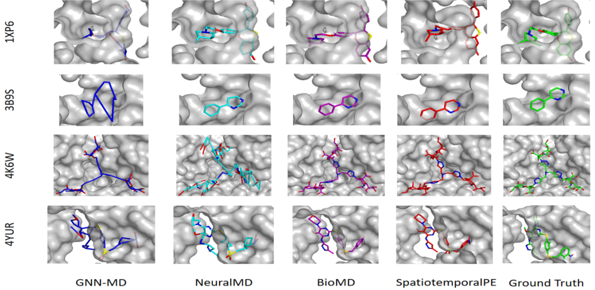
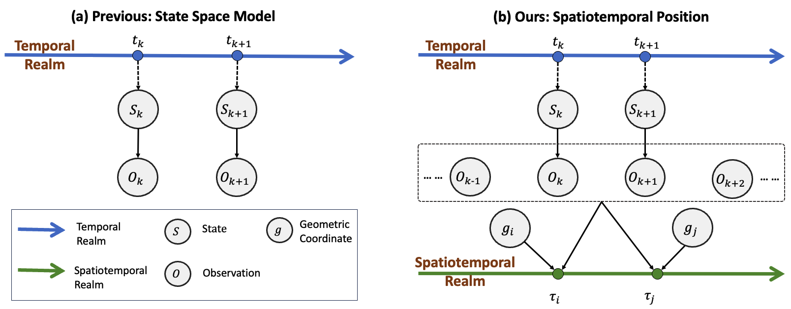
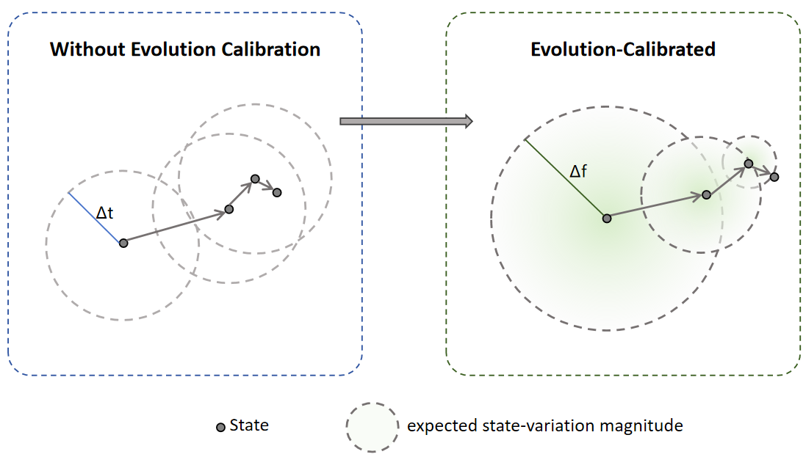
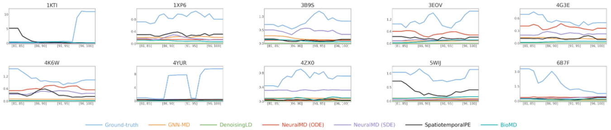

Spatiotemporal Perceptron with Positional Encoding: A State-Space Perspective
1The Chinese University of Hong Kong 2Alibaba Group
Visualization of the Last Snapshot on Four Protein-Ligand Dynamics
The final-snapshot visualization provides a direct comparison of predicted ligand binding poses on four protein-ligand dynamics against the ground truth.

Design Motivation
SpatiotemporalPE combines spatial information and temporal information from the observation sequence to construct token positions in the Spatiotemporal Realm. In this realm, each token is represented by its spatial coordinate and an observation-difference temporal coordinate, so attention measures relative displacement in a joint spatiotemporal positional space.

Design Motivation of Observation-difference Mapping
The Observation-difference Map is designed so that the coordinate increment Δf is proportional to the magnitude of state variation. Instead of treating raw Δt as the temporal distance, it stretches intervals with larger observed changes and contracts intervals with smaller changes. The dashed circles illustrate the expected magnitude of state variation, not its direction.

Oscillation Visualization with RMSF

Citation
@article{spatiotemporalpe,
title = {Spatiotemporal Perceptron with Positional Encoding:
A State-Space Perspective},
author = {Tianyi Shi and Hanqun Cao and Yuhao Li and Pheng-Ann Heng and Weitao Du and Shengchao Liu},
journal = {Publication details},
year = {20XX}
}